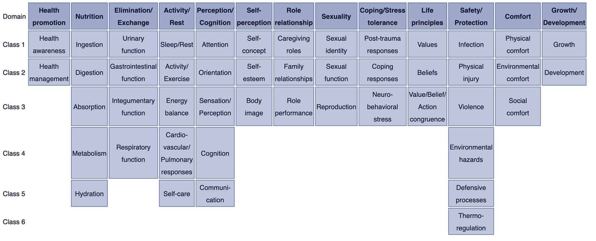
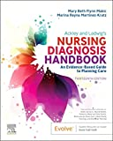
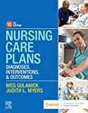
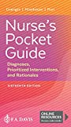
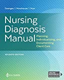
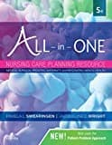

In this ultimate tutorial and nursing diagnosis list, we’ll walk you through the concepts behind writing nursing diagnosis. Learn what a nursing diagnosis is, its history and evolution, the nursing process, the different types and classifications, and how to write nursing diagnoses correctly. Included also in this guide are tips on how you can formulate better nursing diagnoses, plus guides on how you can use them in creating your nursing care plans.
What is a Nursing Diagnosis?
A nursing diagnosis is a clinical judgment concerning a human response to health conditions/life processes, or a vulnerability to that response, by an individual, family, group, or community. A nursing diagnosis provides the basis for selecting nursing interventions to achieve outcomes for which the nurse has accountability. Nursing diagnoses are developed based on data obtained during the nursing assessment and enable the nurse to develop the care plan.
Purposes of Nursing Diagnosis
The purpose of the nursing diagnosis is as follows:
- For nursing students, nursing diagnoses are an effective teaching tool to help sharpen their problem-solving and critical thinking skills.
- Helps identify nursing priorities and helps direct nursing interventions based on identified priorities.
- Helps the formulation of expected outcomes for quality assurance requirements of third-party payers.
- Nursing diagnoses help identify how a client or group responds to actual or potential health and life processes and knowing their available resources of strengths that can be drawn upon to prevent or resolve problems.
- Provides a common language and forms a basis for communication and understanding between nursing professionals and the healthcare team.
- Provides a basis of evaluation to determine if nursing care was beneficial to the client and cost-effective.
Differentiating Nursing Diagnoses, Medical Diagnoses, and Collaborative Problems
The term nursing diagnosis is associated with different concepts. It may refer to the distinct second step in the nursing process, diagnosis (“D” in “ADPIE“). Also, nursing diagnosis applies to the label when nurses assign meaning to collected data appropriately labeled a nursing diagnosis. For example, during the assessment, the nurse may recognize that the client feels anxious, fearful, and finds it difficult to sleep. Those problems are labeled with nursing diagnoses: respectively, Anxiety, Fear, and Disturbed Sleep Pattern. In this context, a nursing diagnosis is based upon the patient’s response to the medical condition. It is called a ‘nursing diagnosis’ because these are matters that hold a distinct and precise action associated with what nurses have the autonomy to take action about with a specific disease or condition. This includes anything that is a physical, mental, and spiritual type of response. Hence, a nursing diagnosis is focused on care.

On the other hand, a medical diagnosis is made by the physician or advanced health care practitioner that deals more with the disease, medical condition, or pathological state only a practitioner can treat. Moreover, through experience and know-how, the specific and precise clinical entity that might be the possible cause of the illness will then be undertaken by the doctor, therefore, providing the proper medication that would cure the illness. Examples of medical diagnoses are Diabetes Mellitus, Tuberculosis, Amputation, Hepatitis, and Chronic Kidney Disease. The medical diagnosis normally does not change. Nurses must follow the physician’s orders and carry out prescribed treatments and therapies.
Collaborative problems are potential problems that nurses manage using both independent and physician-prescribed interventions. These are problems or conditions that require both medical and nursing interventions, with the nursing aspect focused on monitoring the client’s condition and preventing the development of the potential complication.
As explained above, now it is easier to distinguish a nursing diagnosis from a medical diagnosis. Nursing diagnosis is directed towards the patient and their physiological and psychological response. On the other hand, a medical diagnosis is particular to the disease or medical condition. Its center is on the illness.
Classification of Nursing Diagnoses (Taxonomy II)
How are nursing diagnoses listed, arranged, or classified? In 2002, Taxonomy II was adopted, which was based on the Functional Health Patterns assessment framework of Dr. Mary Joy Gordon. Taxonomy II has three levels: Domains (13), Classes (47), and nursing diagnoses. Nursing diagnoses are no longer grouped by Gordon’s patterns but coded according to seven axes: diagnostic concept, time, unit of care, age, health status, descriptor, and topology. In addition, diagnoses are now listed alphabetically by their concept, not by the first word.

- Domain 1. Health Promotion
- Class 1. Health Awareness
- Class 2. Health Management
- Domain 2. Nutrition
- Class 1. Ingestion
- Class 2. Digestion
- Class 3. Absorption
- Class 4. Metabolism
- Class 5. Hydration
- Domain 3. Elimination and Exchange
- Class 1. Urinary function
- Class 2. Gastrointestinal function
- Class 3. Integumentary function
- Class 4. Respiratory function
- Domain 4. Activity/Rest
- Class 1. Sleep/Rest
- Class 2. Activity/Exercise
- Class 3. Energy balance
- Class 4. Cardiovascular/Pulmonary responses
- Class 5. Self-care
- Domain 5. Perception/Cognition
- Class 1. Attention
- Class 2. Orientation
- Class 3. Sensation/Perception
- Class 4. Cognition
- Class 5. Communication
- Domain 6. Self-Perception
- Class 1. Self-concept
- Class 2. Self-esteem
- Class 3. Body image
- Domain 7. Role relationship
- Class 1. Caregiving roles
- Class 2. Family relationships
- Class 3. Role performance
- Domain 8. Sexuality
- Class 1. Sexual identity
- Class 2. Sexual function
- Class 3. Reproduction
- Domain 9. Coping/stress tolerance
- Class 1. Post-trauma responses
- Class 2. Coping responses
- Class 3. Neurobehavioral stress
- Domain 10. Life principles
- Class 1. Values
- Class 2. Beliefs
- Class 3. Value/Belief/Action congruence
- Domain 11. Safety/Protection
- Class 1. Infection
- Class 2. Physical injury
- Class 3. Violence
- Class 4. Environmental hazards
- Class 5. Defensive processes
- Class 6. Thermoregulation
- Domain 12. Comfort
- Class 1. Physical comfort
- Class 2. Environmental comfort
- Class 3. Social comfort
- Domain 13. Growth/Development
- Class 1. Growth
- Class 2. Development
Nursing Process
The five stages of the nursing process are assessment, diagnosing, planning, implementation, and evaluation. All steps in the nursing process require critical thinking by the nurse. Apart from understanding nursing diagnoses and their definitions, the nurse promotes awareness of defining characteristics and behaviors of the diagnoses, related factors to the selected nursing diagnoses, and the interventions suited for treating the diagnoses.
The steps, importance, purposes, and characteristics of the nursing process are discussed more in detail here: “The Nursing Process: A Comprehensive Guide“
Types of Nursing Diagnoses
The four types of nursing diagnosis are Actual (Problem-Focused), Risk, Health Promotion, and Syndrome. Here are the four categories of nursing diagnoses:

Problem-Focused Nursing Diagnosis
A problem-focused diagnosis (also known as actual diagnosis) is a client problem present at the time of the nursing assessment. These diagnoses are based on the presence of associated signs and symptoms. Actual nursing diagnosis should not be viewed as more important than risk diagnoses. There are many instances where a risk diagnosis can be the diagnosis with the highest priority for a patient.
Problem-focused nursing diagnoses have three components: (1) nursing diagnosis, (2) related factors, and (3) defining characteristics. Examples of actual nursing diagnoses are:
- Anxiety related to stress as evidenced by increased tension, apprehension, and expression of concern regarding upcoming surgery
- Acute pain related to decreased myocardial flow as evidenced by grimacing, expression of pain, guarding behavior.
Risk Nursing Diagnosis
The second type of nursing diagnosis is called risk nursing diagnosis. These are clinical judgment for a problem does not exist, but the presence of risk factors indicates that a problem is likely to develop unless nurses intervene. A risk diagnosis is based on the patient’s current health status, past health history, and other risk factors that may increase the patient’s likelihood of experiencing a health problem. These are integral part of nursing care because they help to identify potential problems early on and allows the nurse to take steps to prevent or mitigate the risk.
There are no etiological factors (related factors) for risk diagnoses. The individual (or group) is more susceptible to developing the problem than others in the same or a similar situation because of risk factors. For example, an elderly client with diabetes and vertigo who has difficulty walking refuses to ask for assistance during ambulation may be appropriately diagnosed with risk for injury or risk for falls.
IMPORTANT: For risk nursing diagnosis, “as evidenced by” is used to connect the risk diagnosis label with the risk factors, rather than with the defining characteristics. The components of a risk nursing diagnosis therefore include:
- Risk diagnostic label, joined by “as evidenced by”
- Risk factors
Examples of risk nursing diagnosis are:
- Risk for Injury as evidenced by reduced cognitive awareness and use of sedative medications.
- Risk for Infection as evidenced by surgical wound, compromised immune system, and prolonged hospitalization.
- Risk for Falls as evidenced by muscle weakness, history of previous falls, impaired mobility, and use of assistive devices.
Health Promotion Diagnosis
Health promotion diagnosis (also known as wellness diagnosis) is a clinical judgment about motivation and desire to increase well-being. It is a statement that identifies the patient’s readiness for engaging in activities that promote health and well-being. For example, if a first-time mother shows interest on how to properly breastfeed her baby, a nurse make make a health promotion diagnosis of “Readiness for Enhanced Breastfeeding.” This nursing diagnosis will be then used to guide nursing interventions aimed at supporting the patient in learning about proper breastfeeding.
Additionally, health promotion diagnosis is concerned with the individual, family, or community transition from a specific level of wellness to a higher level of wellness. Components of a health promotion diagnosis generally include only the diagnostic label or a one-part statement but can be enhanced for clarity by adding related factors. Examples of health promotion diagnosis:
- Readiness for Enhanced Knowledge as evidenced by expressed desire to learn about a specific topic, openness to education, and motivation to understand complex concepts.
- Readiness for Enhanced Breastfeeding as evidenced by desire to increase breastfeeding frequency, expressed interest in learning proper latching techniques, and verbalized commitment to breastfeeding.
- Readiness for Enhanced Comfort as evidenced by expressed desire to explore comfort measures, willingness to engage in relaxation practices, and interest in improving pain management strategies.
Syndrome Diagnosis
A syndrome diagnosis is a clinical judgment concerning a cluster of problem or risk nursing diagnoses that are predicted to present because of a certain situation or event. They, too, are written as a one-part statement requiring only the diagnostic label. Examples of a syndrome nursing diagnosis are:
- Chronic Pain Syndrome
- Frail Elderly Syndrome
Possible Nursing Diagnosis
A possible nursing diagnosis is not a type of diagnosis as are actual, risk, health promotion, and syndrome. Possible nursing diagnoses are statements describing a suspected problem for which additional data are needed to confirm or rule out the suspected problem. It provides the nurse with the ability to communicate with other nurses that a diagnosis may be present but additional data collection is indicated to rule out or confirm the diagnosis. Examples include:
- Possible chronic low self-esteem
- Possible social isolation
Components of a Nursing Diagnosis
A nursing diagnosis has typically three components: (1) the problem and its definition, (2) the etiology, and (3) the defining characteristics or risk factors (for risk diagnosis).
Problem and Definition
The problem statement, or the diagnostic label, describes the client’s health problem or response to which nursing therapy is given concisely. A diagnostic label usually has two parts: qualifier and focus of the diagnosis. Qualifiers (also called modifiers) are words that have been added to some diagnostic labels to give additional meaning, limit, or specify the diagnostic statement. Exempted in this rule are one-word nursing diagnoses (e.g., Anxiety, Constipation, Diarrhea, Nausea, etc.) where their qualifier and focus are inherent in the one term.
| Qualifier | Focus of the Diagnosis |
|---|---|
| Deficient | Fluid volume |
| Imbalanced | Nutrition: Less Than Body Requirements |
| Impaired | Gas Exchange |
| Ineffective | Tissue Perfusion |
| Risk for | Injury |
Etiology
The etiology, or related factors, component of a nursing diagnosis label identifies one or more probable causes of the health problem, are the conditions involved in the development of the problem, gives direction to the required nursing therapy, and enables the nurse to individualize the client’s care. Nursing interventions should be aimed at etiological factors in order to remove the underlying cause of the nursing diagnosis. Etiology is linked with the problem statement with the phrase “related to” for example:
- Activity intolerance related to generalized weakness.
- Decreased cardiac output related to abnormality in blood profile
Risk Factors
Risk factors are used instead of etiological factors for risk nursing diagnosis. Risk factors are forces that put an individual (or group) at an increased vulnerability to an unhealthy condition. Risk factors are written following the phrase “as evidenced by” in the diagnostic statement.
- Risk for falls as evidenced by old age and use of walker.
- Risk for infection as evidenced by break in skin integrity.
Defining Characteristics
Defining characteristics are the clusters of signs and symptoms that indicate the presence of a particular diagnostic label. In actual nursing diagnosis, the defining characteristics are the identified signs and symptoms of the client. For risk nursing diagnosis, no signs and symptoms are present therefore the factors that cause the client to be more susceptible to the problem form the etiology of a risk nursing diagnosis. Defining characteristics are written following the phrase “as evidenced by” or “as manifested by” in the diagnostic statement.
Diagnostic Process: How to Diagnose
There are three phases during the diagnostic process: (1) data analysis, (2) identification of the client’s health problems, health risks, and strengths, and (3) formulation of diagnostic statements.
Analyzing Data
Analysis of data involves comparing patient data against standards, clustering the cues, and identifying gaps and inconsistencies.
Identifying Health Problems, Risks, and Strengths
In this decision-making step, after data analysis, the nurse and the client identify problems that support tentative actual, risk, and possible diagnoses. It involves determining whether a problem is a nursing diagnosis, medical diagnosis, or a collaborative problem. Also, at this stage, the nurse and the client identify the client’s strengths, resources, and abilities to cope.
Formulating Diagnostic Statements
Formulation of diagnostic statements is the last step of the diagnostic process wherein the nurse creates diagnostic statements. The process is detailed below.
How to Write a Nursing Diagnosis?
In writing nursing diagnostic statements, describe an individual’s health status and the factors that have contributed to the status. You do not need to include all types of diagnostic indicators. Writing diagnostic statements vary per type of nursing diagnosis (see below).

PES Format
Another way of writing nursing diagnostic statements is by using the PES format, which stands for Problem (diagnostic label), Etiology (related factors), and Signs/Symptoms (defining characteristics). Diagnostic statements can be one-part, two-part, or three-part using the PES format.

One-Part Nursing Diagnosis Statement
Health promotion nursing diagnoses are usually written as one-part statements because related factors are always the same: motivated to achieve a higher level of wellness through related factors may be used to improve the chosen diagnosis. Syndrome diagnoses also have no related factors. Examples of one-part nursing diagnosis statements include:
- Readiness for enhanced coping
- Rape Trauma Syndrome
Two-Part Nursing Diagnosis Statement
Risk and possible nursing diagnoses have two-part statements: the first part is the diagnostic label and the second is the validation for a risk nursing diagnosis or the presence of risk factors. It’s not possible to have a third part for risk or possible diagnoses because signs and symptoms do not exist. Examples of two-part nursing diagnosis statements include:
- Risk for Infection as evidenced by weakened immune system response
- Risk for Injury as evidenced by unstable hemodynamic profile
Three-part Nursing Diagnosis Statement
An actual or problem-focus nursing diagnosis has three-part statements: diagnostic label, contributing factor (“related to”), and signs and symptoms (“as evidenced by” or “as manifested by”). The three-part nursing diagnosis statement is also called the PES format which includes the Problem, Etiology, and Signs and Symptoms. Example of three-part nursing diagnosis statements include:
- Acute Pain related to tissue ischemia as evidenced by statement of “I’m experiencing intense, sharp pain in my chest!”
- Impaired Physical Mobility related to muscle weakness as evidenced by difficulty in moving independently, and client stating “I feel too weak to move on my own.”
- Activity Intolerance related to decreased cardiac output as evidenced by shortness of breath and patient stating, “I feel exhausted after just a few steps,” secondary to pneumonia.
Variations on Basic Statement Formats
Variations in writing nursing diagnosis statement formats include the following:
- Using “secondary to” to divide the etiology into two parts to make the diagnostic statement more descriptive and useful. Following the “secondary to” is often a pathophysiologic or disease process or a medical diagnosis. For example, Risk for Decreased Cardiac Output as evidenced by reduced preload secondary to myocardial infarction.
- Using “complex factors” when there are too many etiologic factors or when they are too complex to state in a brief phrase. For example, Chronic Low Self-Esteem related to complex factors.
- Using “unknown etiology” when the defining characteristics are present but the nurse does not know the cause or contributing factors. For example, Ineffective Coping related to unknown etiology.
- Specifying a second part of the general response or diagnostic label to make it more precise. For example, Impaired Skin Integrity (Right Anterior Chest) related to disruption of skin surface secondary to burn injury.
Nursing Diagnosis for Care Plans
This section is the list or database of the common nursing diagnosis examples that you can use to develop your nursing care plans.
See also: Nursing Care Plans (NCP): Ultimate Guide and List
- Activity Intolerance and Generalized Weakness
- Acute Confusion (Delirium) and Altered Mental Status
- Acute Pain
- Anxiety & Fear
- Bowel Incontinence (Fecal Incontinence)
- Caregiver Role Strain & Family Caregiver Support Systems
- Chronic Confusion (Dementia)
- Chronic Pain (Pain Management)
- Constipation
- Decreased Cardiac Output & Cardiac Support
- Diarrhea
- Disturbed Body Image & Self-Esteem
- Fatigue & Lethargy
- Fever (Pyrexia)
- Fluid Volume Deficit (Dehydration & Hypovolemia)
- Fluid Volume Excess (Hypervolemia)
- Grieving & Loss
- Hyperthermia & Heat-Related Illnesses
- Hypothermia & Cold Injuries
- Imbalanced Nutrition
- Impaired Gas Exchange
- Impaired Swallowing (Dysphagia)
- Impaired Thought Processes & Cognitive Impairment
- Impaired Tissue Perfusion & Ischemia
- Impaired Tissue/Skin Integrity (Wound Care)
- Ineffective Airway Clearance & Coughing
- Ineffective Breathing Pattern (Dyspnea)
- Insomnia & Sleep Deprivation
- Knowledge Deficit & Patient Education
- Nausea & Vomiting
- Physical Mobility & Immobility
- Risk for Aspiration (Aspiration Pneumonia)
- Risk for Bleeding (Hemophilia)
- Risk for Falls (Fall Risk & Prevention)
- Risk for Infection and Infection Control
- Risk for Injury & Patient Safety
- Self-Care Deficit & Activities of Daily Living (ADLs)
- Unstable Blood Glucose Levels (Hyperglycemia & Hypoglycemia)
- Urinary Elimination (Urinary Incontinence & Urinary Retention)
- For the full list, please visit: Nursing Care Plans (NCP): Ultimate Guide and List
Recommended Resources
Recommended nursing diagnosis and nursing care plan books and resources.
Disclosure: Included below are affiliate links from Amazon at no additional cost from you. We may earn a small commission from your purchase. For more information, check out our privacy policy.
Ackley and Ladwig’s Nursing Diagnosis Handbook: An Evidence-Based Guide to Planning Care
We love this book because of its evidence-based approach to nursing interventions. This care plan handbook uses an easy, three-step system to guide you through client assessment, nursing diagnosis, and care planning. Includes step-by-step instructions showing how to implement care and evaluate outcomes, and help you build skills in diagnostic reasoning and critical thinking.

Nursing Care Plans – Nursing Diagnosis & Intervention (10th Edition)
Includes over two hundred care plans that reflect the most recent evidence-based guidelines. New to this edition are ICNP diagnoses, care plans on LGBTQ health issues, and on electrolytes and acid-base balance.

Nurse’s Pocket Guide: Diagnoses, Prioritized Interventions, and Rationales
Quick-reference tool includes all you need to identify the correct diagnoses for efficient patient care planning. The sixteenth edition includes the most recent nursing diagnoses and interventions and an alphabetized listing of nursing diagnoses covering more than 400 disorders.

Nursing Diagnosis Manual: Planning, Individualizing, and Documenting Client Care
Identify interventions to plan, individualize, and document care for more than 800 diseases and disorders. Only in the Nursing Diagnosis Manual will you find for each diagnosis subjectively and objectively – sample clinical applications, prioritized action/interventions with rationales – a documentation section, and much more!

All-in-One Nursing Care Planning Resource – E-Book: Medical-Surgical, Pediatric, Maternity, and Psychiatric-Mental Health
Includes over 100 care plans for medical-surgical, maternity/OB, pediatrics, and psychiatric and mental health. Interprofessional “patient problems” focus familiarizes you with how to speak to patients.

See also
Other recommended site resources for this nursing care plan:
- Nursing Care Plans (NCP): Ultimate Guide and Database MUST READ!
Over 150+ nursing care plans for different diseases and conditions. Includes our easy-to-follow guide on how to create nursing care plans from scratch. - Nursing Diagnosis Guide and List: All You Need to Know to Master Diagnosing
Our comprehensive guide on how to create and write diagnostic labels. Includes detailed nursing care plan guides for common nursing diagnostic labels.
References and Sources
References for this Nursing Diagnosis guide and recommended resources to further your reading.
- Berman, A., Snyder, S., & Frandsen, G. (2016). Kozier & Erb’s Fundamentals of Nursing: Concepts, process and practice. Boston, MA: Pearson.
- Edel, M. (1982). The nature of nursing diagnosis. In J. Carlson, C. Craft, & A. McGuire (Eds.), Nursing diagnosis (pp. 3-17). Philadelphia: Saunders.
- Fry, V. (1953). The Creative approach to nursing. AJN, 53(3), 301-302.
- Gordon, M. (1982). Nursing diagnosis: Process and application. New York: McGraw-Hill.
- Gordon, M. (2014). Manual of nursing diagnosis. Jones & Bartlett Publishers.
- Gebbie, K., & Lavin, M. (1975.) Classification of nursing diagnoses: Proceedings of the First National Conference. St. Louis, MO: Mosby.
- McManus, R. L. (1951). Assumption of functions in nursing. In Teachers College, Columbia University, Regional planning for nurses and nursing education. New York: Columbia University Press.
- Powers, P. (2002). A discourse analysis of nursing diagnosis. Qualitative health research, 12(7), 945-965.


Leave a Comment